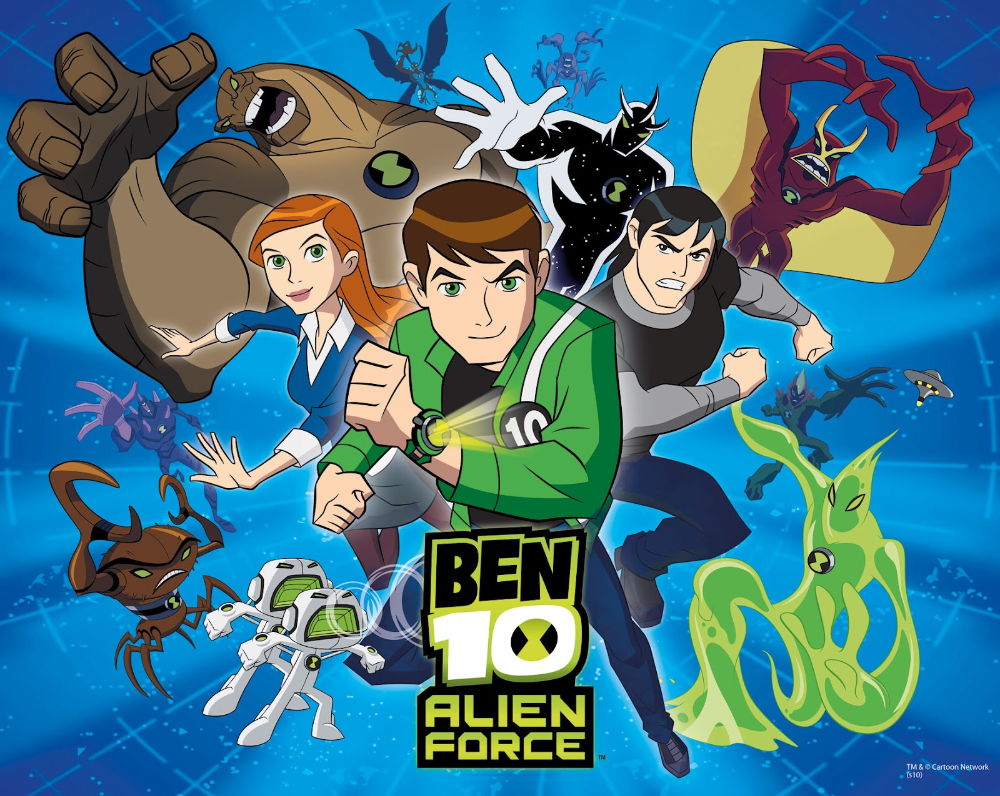
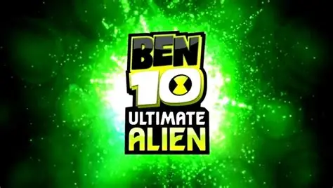
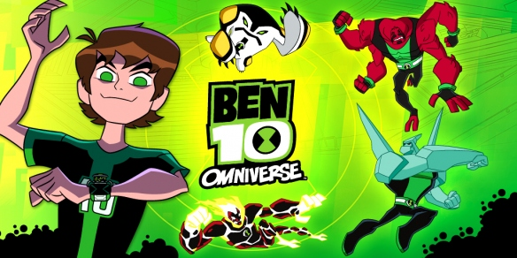

Alienígenas
Conheça cada forma alienígena do Omnitrix.
Sagas do Ben 10
Explore cada fase da história e descubra como o herói evoluiu ao longo do tempo.
 2005 - 2008
2005 - 2008
Ben 10 Clássico
Onde tudo começou: Ben encontra o Omnitrix e vive suas primeiras aventuras.
Ver história

2008 - 2010

2010 - 2012
Supremacia Alienígena
Transformações supremas e batalhas épicas contra vilões poderosos.
Ver história

2012 - 2014